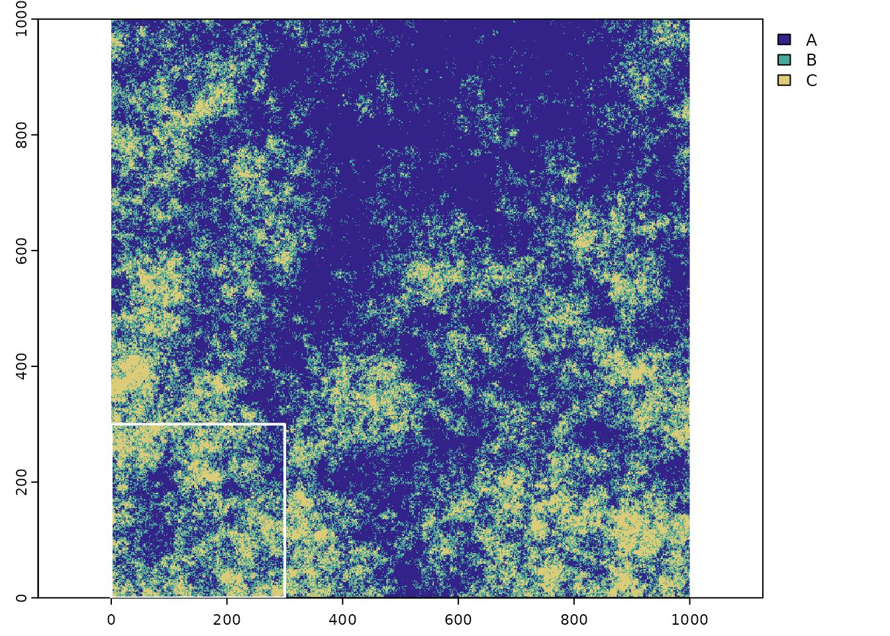
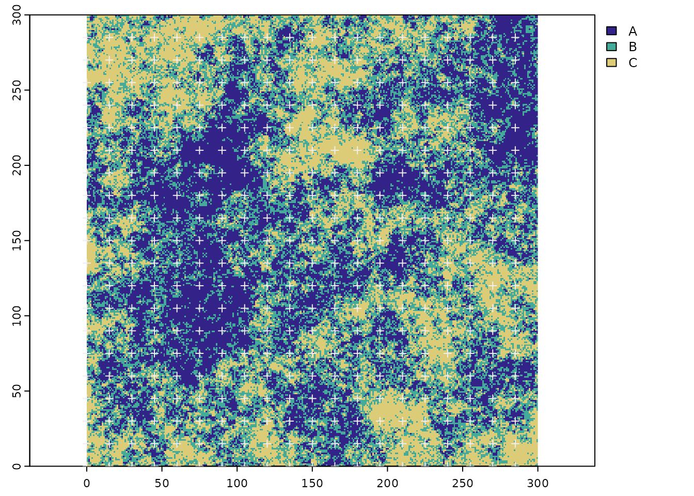
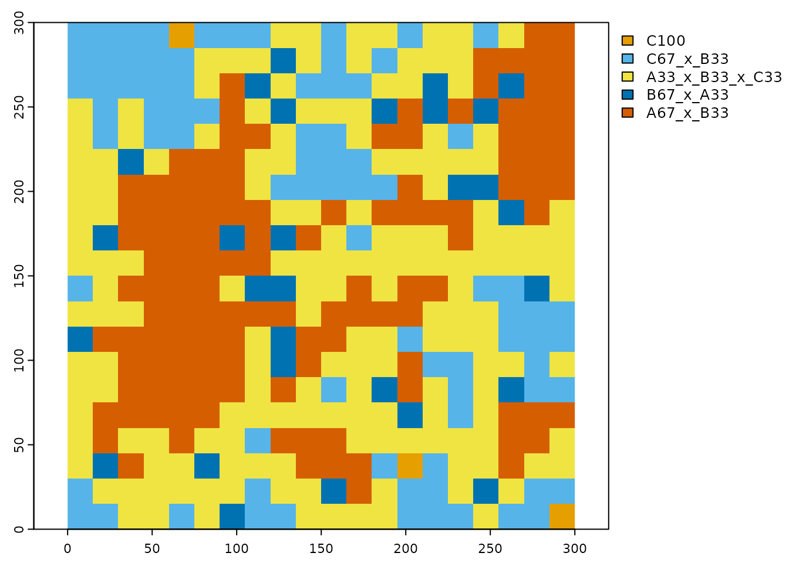
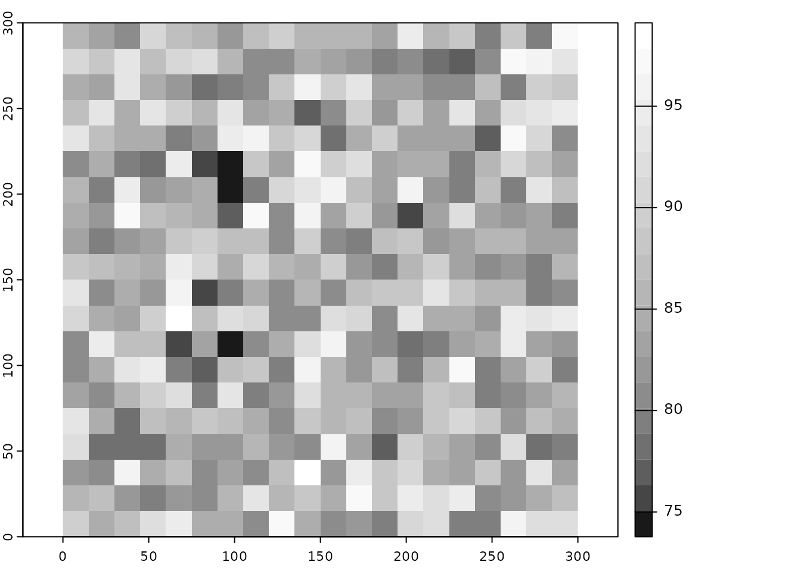

library(landscapeScaling)
library(terra)
#> terra 1.6.17The purpose of the “landscapeScaling” package is to provide a method and the supporting functions to upscale categorical raster data. The recommended method is the multi-dimensional grid-point (mdgp) scaling algorithm Gann (2019). This algorithm generates a new classification scheme on the basis of user desired class label precision of mixed classes and representativeness of the scaled class across the landscape of interest. The scaling output provides scaled categorical raster maps with mixed classes, a corresponding continuous raster with information retention calculations for each scaled grid cell and class-specific and landscape-scale mean and standard deviation of compositional information retention.
Categorical raster data sets often require up-scaling or aggregation to a lower spatial resolution to make them compatible with other data sets or the scale of analysis. Despite validity of classification schemes for a limited range of spatial scales, most data aggregation algorithms for categorical data are insensitive to scale dependence of the classification scheme. This leads to high, uncontrolled and most often unknown loss of compositional information at the scaled grid cell scale, while potentially extending the high-resolution classification scheme beyond its valid scale range.
Here we define the compositional information retention when scaling a high-resolution data set to a lower aggregated form with the Czekanowski Index:
\[IR_{c} = \sum_{i-1}^{N} min(P_{i}smp, P_{i}scaled)\] \(IR_{c}\) is the compositional information retention; \(P_{i}smp\) is the proportion of class \(i\) of the high-resolution grid within the scaled grid cell, and \(P_{i}scaled\) is the proportion of class \(i\) retained in the scaled grid cell label. The loss of information for majority- and nearest-neighbor rule aggregation are demonstrated for a small subset of a 9 x 9 grid cell landscape aggregated with a scale factor of 3 and 9.
Figure 1 Compositional information loss when upscaling categorical data while maintaining the high-resolution classification scheme. Richness of the original landscape is three (classes a,b and c). Aggregation with the majority rule and nearest-neighbor rule and a scale factor of 3 and 9 leads to high information loss not accounting for any mixed classes. Adapted from Gann and Richards (2022).
The MDGP-Scaling algorithm aggregates categorical data while simultaneously generating a non-hierarchical, representative, classification system for the aggregated spatial scale. The scaled data consistently preserves information at a significantly higher rate than other aggregation algorithms that do not account for classification scheme dependence (e.g., majority rule, nearest-neighbor rule).
The algorithm controls for information loss with the parameter \(parts\), which relates to the scaled class-label precision of mixed classes. The larger the parameter (the more parts), the more classes will be generated with increasing precision of class-label components in the scaled class labels. The number of potential classes is determined by the richness of the original raster, and the precision parameter \(parts\). Setting \(parts\) to 1 (precision = 100%) is equal to the most commonly used alternative method of majority (plurality) rule.
Figure 2 Multi-dimensional grid points generated for class-label precisions ranging from 100% (parts = 1) to 20% (parts = 5). As richness of the original landscape increases the dimensionality of the multi-dimensional grid points increases (blue box). Adopted from Gann (2019).
Scaling the small three class example landscape in Fig.1 with a scale factor of 9 (all 81 grid cells are replaced by 1 scaled grid cell) and the 1-part (precision = 100%, the majority-rule), 2-part (precision = 50%), 3-part (precision = 33.33%), and 4-part (precision = 25%) precision solutions generate the respective multi-dimensional grid points. For each precision level, the scaled cell assigned to the grid point that maximizes \(IR_{c}\). Comparison across all solutions indicates the maximum information retained for the given precision level.
Figure 3 Multi-dimensional grid points generated for label precisions ranging from 100% (parts = 1) to 25% (parts = 4) (top to bottom). Richness of the original landscape is three (classes a,b and c). The scaled class label list for each precision level (LabelList) is the enumerated list of all grid points. The solution that maximizes categorical information retention \(IR_{c}\) for each grid-point solution is emphasized in bold. The last column summarizes the grid-point information the grid cell is assigned. Maximum \(IR_{c}\) increases with precision. Adopted from Gann and Richards (2022).
Consdering the representativeness of a scaled class across the scaled landscape (study area), in addition to the class label precision parameter \(parts\) the representativeness threshold parameter \(rpr-threshold\) determines which scaled grid-point classes are retained. A third parameter \(monotypic-threshold\) determines the threshold for class abundance to be considered a monotypic class and to be retained in the final classification scheme even when present at less than the representativeness threshold across the landscape.
The functions for MDGP-Scaling can be divided into two types of functions. The vignette explores the low-level functions that follow a step-wise procedure of the scaling process. The high-level function that nests several functions to produce a scaled product from the raw categorical raster input is the ‘mdgp_scale_raster’ function.
First we load a neutral landscape that had been generated with the mid-point replacement algorithm in the NLMR package (Sciaini et al. 2018). The landscape has three classes (richness) with a geometric class abundance distribution and a spatial aggregation of 0. For demonstration purpose we first subset the original raster to the lower left chunk of 90,000 grid cells (300 by 300 cells).
# load categorical raster data set and plot
r <- terra::rast(system.file("extdata/nlm_mid_geom_r3_sa0.tif", package = "landscapeScaling"))
# set the three class color scheme
clr <- c('#332288','#44AA99','#DDCC77')
# plot the original categorical raster
terra::plot(r, col=clr,mar=c(1.5,1.5,0.75,5))
# define a subset extent to encompass the lower left 300 by 300 cells (for demo purpose)
sub_ext <- terra::ext(0,300,0,300)
# add the extent outline to the plot (white outline)
terra::plot(sub_ext, border='white',lwd=2,add=TRUE)
Figure 4 The original raster with three classes and the subset extent in the lower left corner (outline in white).
# subset the landscape and plot
r_sub <- terra::crop(r,sub_ext)
terra::plot(r_sub,col=clr,mar=c(1.5,1.5,0.75,5))Figure 5 The subset of the categorical raster.
LL_pnts <- scale_grid(r_sub,scale_factor=15)
head(LL_pnts)
#> x y
#> 1 0 0
#> 2 15 0
#> 3 30 0
#> 4 45 0
#> 5 60 0
#> 6 75 0
terra::plot(r_sub,col=clr,mar=c(1.5,1.5,0.75,5))
terra::plot(vect(LL_pnts,geom=c("x","y")),pch=3,col='#EEEEEE',add=TRUE)
Figure 6 The subset of the categorical raster and the scaled grid cell origin (lower left corners)
rel_abund <- relative_abundance_scaled_grid(r_sub,class_field='cover',scale_factor=15)
head(rel_abund)
#> x y A B C
#> 1 0 0 4.8888889 38.22222 56.88889
#> 2 15 0 10.2222222 38.66667 51.11111
#> 3 30 0 20.0000000 42.66667 37.33333
#> 4 45 0 24.8888889 40.44444 34.66667
#> 5 60 0 0.8888889 28.00000 71.11111
#> 6 75 0 17.7777778 37.33333 44.88889
# classify relative abundance samples to multi-dimensional grid points with a 33.3% class label precision and a 10 percent representativeness threshold and a monotypic class threshold of 90%
mdgp_result <- mdgp_scale(rel_abund,parts=3,rpr_threshold=10,monotypic_threshold=90)
#> [1] "number of cells: 400"
#> [1] "number of grid points: 10"
#> [1] "number of grid points remaining: 5"
head(mdgp_result)
#> cls A B C x_y prc_inf_agr class_name
#> 1 10 0.000 8.444 91.556 285_0 91.556 C100
#> 2 10 0.000 9.333 90.667 195_30 90.667 C100
#> 3 10 0.444 12.444 87.111 60_285 87.111 C100
#> 4 9 4.889 38.222 56.889 0_0 90.222 C67_x_B33
#> 5 9 10.222 38.667 51.111 15_0 84.444 C67_x_B33
#> 6 9 10.667 42.667 46.667 225_0 80.000 C67_x_B33
# convert classified points and location-specific information retention to raster
mdgp_raster <- scaling_result_to_raster(mdgp_result,class_name_field='class_name',scale_factor=15)
# plot the scaled map
clr_scale <- c('#E69F00','#56B4E9','#009E73','#F0E442','#0072B2','#D55E00')
terra::plot(mdgp_raster[[1]],col=clr_scale,mar=c(1.5,1.5,1,8))
Figure 7 The scaled categorical raster with a new scaled classification scheme.
# plot information retention of the scaled map
terra::plot(mdgp_raster[[2]],col=gray.colors(20,start=0.1,end=1),mar=c(1.5,1,1,8))
Figure 8 Information retention raster at the scaled grid cell level.
A third list with two objects returns the class-specific mean and standard deviation of information retention as a data frame and the landscape scale aggregated mean and standard deviation as a list.
# print the class-specific and landscape scale summary statistics
print(mdgp_raster[[3]])
#> [[1]]
#> class_name freq class_id prop inf_retention_mn inf_retention_sd
#> 1 A33_x_B33_x_C33 165 1 0.4125 84.129 3.814
#> 2 A67_x_B33 122 2 0.3050 87.417 6.519
#> 3 B67_x_A33 29 3 0.0725 82.038 2.214
#> 4 C100 3 4 0.0075 89.778 2.352
#> 5 C67_x_B33 81 5 0.2025 88.093 5.132
#>
#> [[2]]
#> mean sd
#> information_retention_landscape 85.826 5.356The next two figures present the scaling results for the full landscape when applying a with scale factor of 5 (Fig. 9) and 15 (Fig. 10) for three precision levels of 100%, 33.3% and 20%.
Figure 9 Neutral landscape generated with nlme mid-point displacement algorithm. Richness of the landscape is three (classes A,B and C) with a geomtric class distribution and an aggregation factor of 0.0, scaled with a scale factor of 5 and class label precision ranging from 100% (parts=1) to 33,3% (parts=3) and 20% (parts=5). Circle size displays absolute scale of class proportions (Prop_AS) across all plots; colour rendered as relative scale of class proportions (Prop_RS) within each plot. Small black dots in the terneray plots indicate that the potential grid point was not realized at the aggregated scale. Class labels are composed of class name and nominal percent representativeness. Adopted from Gann (2019).
Scaling the full landscape with a scale factor of 15 and three precision levels of 100%, 33.3% and 20%.
Figure 10 Neutral landscape generated with nlme mid-point displacement algorithm. Richness of the landscape is three (classes A,B and C) with a geomtric class distribution and an aggregation factor of 0.0, scaled with a scale factor of 15 and class label precision ranging from 100% (parts=1) to 33,3% (parts=3) and 20% (parts=5). Circle size displays absolute scale of class proportions (Prop_AS) across all plots; colour rendered as relative scale of class proportions (Prop_RS) within each plot. Small black dots in the terneray plots indicate that the potential grid point was not realized at the aggregated scale. Class labels are composed of class name and nominal percent representativeness. Adopted from Gann (2019).
This package generously relies on functions from the R packages terra (Hijmans 2022), compositions (van den Boogaart, Tolosana-Delgado, and Bren 2022), and partitions (Hankin 2006).